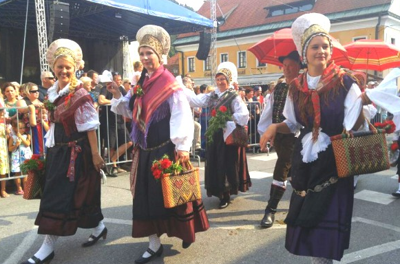

|  | |
쿠렌토바니예(Kurentovanje)라는 봄맞이 축제다. 매년 2월 11일간 열리는 축제로 겨울을 쫓고 봄을 맞이한다는 의미가 있다. 괴물 같은 형상을 한 마스크를 쓰고 털이 수북하게 덮인 독특한 의상을 입는데 마스크는 가죽으로 만들어졌으며 눈과 입만 뚫려있다. 쿠렌토바니예 축제의 가장 큰 특징은 괴물 마스크를 쓴 사람들이 귀가 아플 정도로 소리를 지르는 것이다. 그렇게 소리를 지르는 이유는 겨울을 협박해 다시는 겨울이 얼씬도 못하게 하기 위함이다. |
류블랴나 외곽의 캄닉(Kamnik) 지역에서 ‘2016 전통의상 및 의류 유산의 날’ 축제가 펼쳐졌다. 이 행사는 수십 년의 전통을 이어온 캄닉의 대표 행사로 매해 9월 둘째 주 일요일을 기해 정기적으로 열리고 있다. |